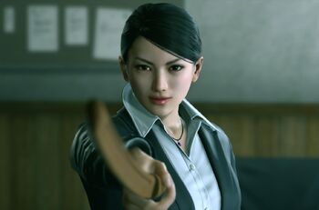

PLAYABLE CHARACTERS
MAJIMA GOROHACHI
Majima Gorohachi (真島 五六八), also known as Shishido Baiken (宍戸 梅軒), is a character in Ryu ga Gotoku Kenzan!. He is a greatly skilled swordsman who joins the army of Clan Tokugawa prior to the Battle of Sekigahara and befriends Miyamoto Musashi during their service together.
kIRYU kAZUMA
Kazuma Kiryu (桐生一馬, Kiryū Kazuma) is the most recurring protagonist of the Yakuza series. He is featured as the main protagonist and playable character in Yakuza/Yakuza Kiwami, Yakuza 2/Yakuza Kiwami 2, Yakuza 3, and Yakuza 6. He is one of multiple main protagonists in Yakuza 0, Yakuza 4, and Yakuza 5.
HARUKA SAWAMURA
Haruka Sawamura (澤村 遥, Sawamura Haruka) is a main character in the Yakuza series. She is the adoptive niece and daughter of Kazuma Kiryu, whom she first meets and becomes close to during the events of Yakuza/Yakuza Kiwami when Kiryu helps her to locate her missing mother when she is 9. She would continue to feature subsequently in Yakuza 2/Yakuza Kiwami 2, Yakuza 3 and Yakuza 4. In Yakuza 5, she is now an idol, and appears as one of the five playable protagonists. She is a central character in Yakuza 6..
ALLIES
KAORU SAYAMA
Kaoru Sayama (狭山 薫, Sayama Kaoru) is the lead detective of the Osakan police's Division Four. She first appears as the deuteragonist of Yakuza 2/Yakuza Kiwami 2, and serves as a minor character in Yakuza 3. Personality Initially, Sayama shows hostility towards Kiryu, but over the course of the game, she warms up to him to the point of later developing strong romantic feelings towards him.
SHINTARO KAZAMA

Shintaro Kazama (風間 新太郎, Kazama Shintarō)[a] is a recurring character in the Yakuza series first introduced in the original Yakuza. He is the captain of the Dojima Family and the patriarch of its subsidiary, the Kazama Family, which later became a direct subsidiary of the Tojo Clan. He is the proprietor of Sunflower Orphanage.